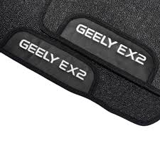
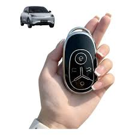
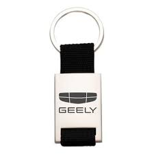
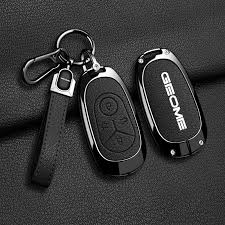
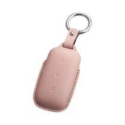
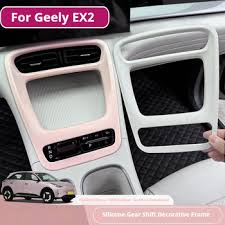

TAPETES DE QUALIDADE
TAPETES BORRACHA PREMIUM GEELY EX2 2025 A 2026
Tapetes de Borracha Premium com Base Emborrachada

TAPETES DE QUALIDADE
TAPETES BORRACHA PREMIUM GEELY EX2 2025 A 2026
Tapetes de Borracha Premium com Base Emborrachada

CAPA DE CHAVE
Capa Chave Geely Ex2 Max E Pro Presença Proteção Geely Ex2
Capinha Protetora Geely Ex2, Acessórios Geely Ex2 2026, Pneu Geely, Adaptador Geely Ex2, Protetor Geely Ex2

CHAVEIRO LUXO
Chaveiro Compatível Com Geely Ec7 Ex2 Ex5 Luxo - L
CHAVEIRO EM AÇO CROMADO E COURO LEGÍTIMO

CAPA DE CHAVE
Geely EX2 Geome Capa Chave Do Carro EV
Geely EX2 Geome Capa Chave Do Carro EV Chaveiro Liga De Zinco Couro Caso Para 2025-2026

CAPA DE CHAVE
Capa De Proteção Para Chave Geely Ex2 Couro Com Fivela Rosa
Tapetes de Borracha Premium com Base Emborrachada

PROTETOR PAINEL
Protetor Ppf Transparente Para Geely Ex2, Antirriscos
Tapetes de Borracha Premium com Base Emborrachada